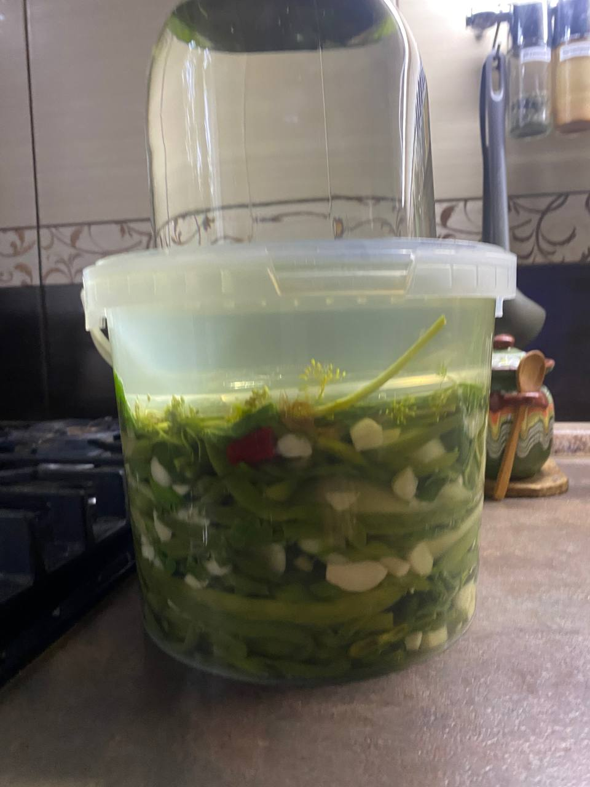

Ингредиенты:
- Фасоль стручковая - 3 кг
- Перец сладкий - 3 штуки
- Горький перец - 250 грамм
- Хрен - 200 грамм
- Чеснок - 500 грамм
- Огурцы - 5 шт
Приготовление:
Помой фасоль , отрежь кончики, те на которых она висела и в соленую кипящую воду опусти , когда вода с фасолью закипит, помешай и пусть покипит 2-3 минуты. Затем вытащи выложи на полотенце и до остывания пусть лежит. Я обычно делаю это вечером и оставляю сохнуть на ночь. Затем готовлю чеснок ( на 3кг фасоли 500гр), перец сладкий количество по желанию, горький перец 200гр( можно чуть больше), хрен ~200гр и это уже на мой вкус беру 2-3 огурца, режу на 4 части по вдоль, ещё укроп ( длинные стебли с зонтиками), хрен можешь взять тот, что у тебя в банке был порезанный, или потертый( не помню)он подойдет или корешки( если найдешь) порежь поперек.
Чеснок режу слайдами, но не очень тонко, сладкий перец по вдоль, горький перец довольно крупно поперек, про огурцы уже написала, но можешь их не класть, не знаю как они себя поведут ( те которые у вас ). И начинаю укладывать в емкость, (как тазик или как у меня на фото), слоями ;фасоль- перцы, чеснок , хрен и так до последней фасоли.
Затем в воду не кипяченую!! , из под крана добавляешь соль, чтобы круто было и заливаешь фасоль, укладываешь укроп по кругу, веночком, а сверху марлю или тонкую ткань, сверху груз. По мере закисания тряпочку промываешь. Стоять должна 1,5 - 2 недели, я пробую , если готова раскладываю , придавливая немного , в банки и в холодильник. )))
